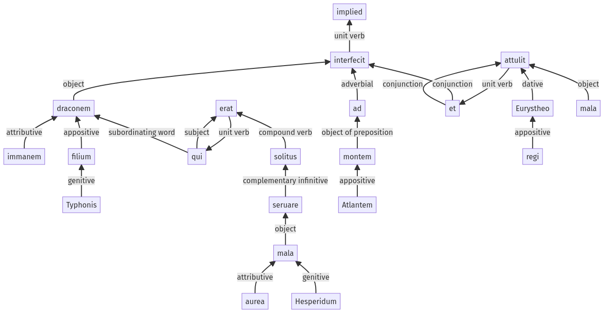

Hyginus, Fabuleer, 30pr.12.1-30pr.12.20a
30pr.11.1-30pr.11.7a | 30pr.13.1-30pr.13.10a
Sentence 430
30pr.12.1-30pr.12.20a
draconem immanem Typhonis filium, qui mala aurea Hesperidum seruare solitus erat, ad montem Atlantem interfecit, et Eurystheo regi mala attulit.
1 draconem immanem Typhonis filium
2 qui mala aurea Hesperidum seruare solitus erat
1 ad montem Atlantem interfecit
1 et Eurystheo regi mala attulit
draconem immanem Typhonis filium, qui mala aurea Hesperidum seruare solitus erat, ad montem Atlantem interfecit, et Eurystheo regi mala attulit.
Highlighting:
- connecting words
- unit verb
- subject
- object
Color code:
- independent clause (level 1, transitive verb)
- independent clause (level 1, transitive verb)
- subordinate clause (level 2, intransitive verb)
